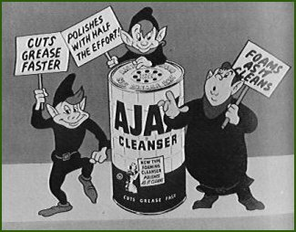
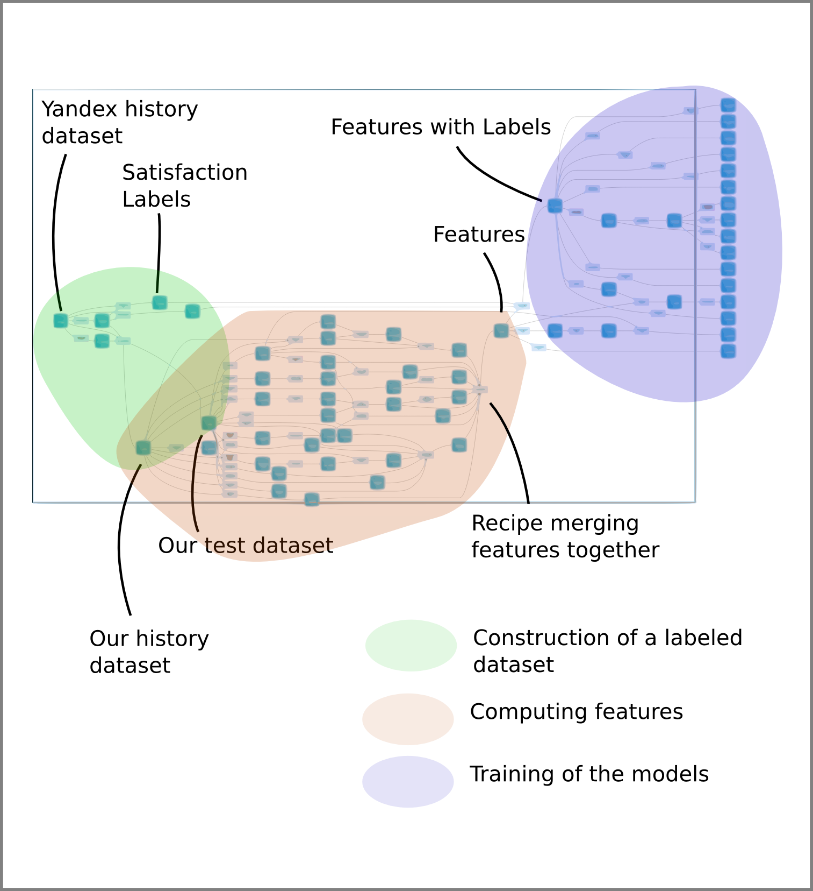
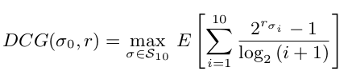
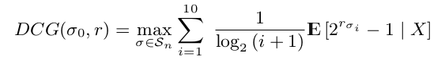
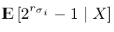
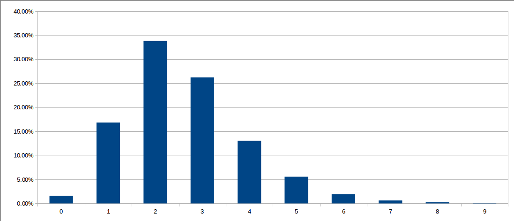

Data Science Studio
Challenge participant talk
WSCD 2014
Dataiku?
DSS: A Data Science Studio
A good opportunity to test our product for team work
No result expectations.
Also nothing to hide : feel free to ask anything
“ Oh great a 25mn commercial !!! ”
Not gonna happen. Bug me after the presentation if you want a demo of the product.
A team of 4
- Kenji Lefevre - Pure Math
- Christophe Bourguignat - Eng. / Signal Processing
- Mathieu Scordia - Data Scientist
- Me (Paul Masurel) - Softw. / Signal Processing
No researcher.
No experience in reranking.
Not much experience in ML for most of us.
Not exactly our job.
No expectations.
At this point,
We are but hobbits

Also, it is only a contest for us
Disclaimer
We did not respect scientific method
Making it supervized learning
Making it supervized learning
We split 27 days of the train dataset 24 + 3 days, and select test queries just like Yandex.
Where is my X, where is my y?
For all these new test sessions, for each of the 10 urls to re-rank, we compute (using the train sessions) a set of feature X.
The outcome of the url display y will be whether we reached a satisfaction of 0, 1, or 2.
We are trying to rerank to in a way that optimizes NDCG

start simple.
Point-wise approach
Regression / classification?
- regression : we keep the hierarchy between the classes, but optimizing NDCG is cookery.
- classification : we lose the hierarchy but we can optimize the NDCG (more and that later)
P. Li, C. J. C. Burges, and Q. Wu. Mcrank: Learning to rank using multiple classification and gradient boosting. In NIPS, 2007.
Classification outperforms regression.
How do we proceed
We use classification techniques to predict the outcome of each url display independantly to output the probabilities of the different classes.
SVM forbidden here!
We sort urls by the value of
p(relevancy=1) + 3 p(relevancy=2)
Where is this 3 coming from?
Given a Bayes classifier
We want to optimize
Given a Bayes classifier
(hidden fallacy here)
Given a Bayes classifier
We therefore need to order urls by decreasing
Hence
p(relevancy=1) + 3 p(relevancy=2)
By the way
P. Li, C. J. C. Burges, and Q. Wu. Mcrank: Learning to rank using multiple classification and gradient boosting. In NIPS, 2007.
get slightly better results with linear weighting.
Settled for Random Tree Forests
Hyperparameter fitting
We are not doing typical classification here. It is extremely important to perform grid search directly against NDCG final score.
Features
First of all the rank
In this contest, the rank is both
The rank that has been displayed to the userthe display rank
The rank that is computed by Yandex using PageRank, non-personalized log analysis?, TF-IDF, etc.
the non-personalized rank
<APARTE>
The problem
with reranking
53% of the competitors could not improve the baseline
Why?
ideal workbench
- compute non-personalized rank
- select 10 bests hits and serves them in order
- re-rank using log analysis.
- put new ranking algorithm in prod (yeah right!)
- compute NDCG on new logs
What you/yandex can afford
- compute non-personalized rank
- select 10 bests hits
- serve 10 bests hits ranked in order
- re-rank using log analysis
- compute score against the log with the former rank
The problem here?
Users tend to click on the first few urls.- User satisfaction metric is influenced by the display rank. Our score is not aligned with our goal.
- We cannot discriminate the effect of the signal of the non-personalized rank from effect of the display rank
This workflow promotes over conservative re-ranking policy
Even if we know for sure that the url with rank 9 would be clicked by the user if it was presented at rank 1, it would be probably a bad idea to rerank it to rank 1 in this contest.
Size of the biggest jump in a reranked session
In advertising,
People can afford displaying random stuff. They can (and do) :
- compute non-personalized rank
- select 10 bests hits
- serve 10 bests hits ranked in random order
- learn a ranker using log analysis
- rank by setting all display rank to 0
</APARTE>
The other features
- The meat : informative features
- When to rerank : promoting / inhibiting features
Informative features (unexpected)
- Revisits (at least 30%)
- (Document, user clicks) distance. SVD. failure (why?)
- (Document, user query history) distance : tfidf, not finished on time. LDA dropped attempt a bit fast.
Revisits
In the past, when the user was displayed this url, with the exact same query, it ended up by
- 0 satisfaction 2
- 1 satisfaction 1
- 0 satisfaction 0
- 0 miss
- 2 skipped
Revisits
We use additive smoothing to make it- 0 / (3+1) = 0% satisfaction 2
- 1 / (3+1) = 25% satisfaction 1
- 0 / (3+1) = 0% satisfaction 0
- (0+1) / (3+1) = 25% miss
- 2 / (3+1) = 50% skipped
... rudimentary but does the job.
Revisits
That's already five feature. We add- 1 An overall counter of display
- 4 mean reciprocal rank (kind of the harmonic mean of the rank)
- 1 snippet quality score : twisted formula used to compute snippet quality
11 features
Many variations
- (In the past|within the same sesssion),
- when (user/anyone)
- (with this very query | whatever query | a subquery | a super query)
- and was offered (this url/this domain)
Query features
How complex is a query? How ambiguous is a query?
- Click entropy
- number of time it has been queried for
- number of terms
- average position within in session
- average number of occurence in a session
- MRR of its clicks
User click habits
- Click entropy
- User click rank counters
- Average number of terms
- Average number of different terms in a session
- Total number of queries issued by the user
Seasonality
- Usually clicked on weekend and we're a Monday
Long story short, point-wise approach Random tree forests
Bonsai model, 30 features - 5th place...
... and then LambdaMART (90 features)
2nd place
No regrets we didn't use first, though
- LambdaMART : 2 days of learning
- Random Tree Forest : 30 minutes, including hyperparameter optimization
The human story
A LOT of work
960+ emails
360+ features
Alarm clocks set at 3:00
Kaggle makes "datascience a sport"
A sport, really?
Trial and Error
Experienced datascientists may stride, and choose their directions more wisely, this kind of problem is a Random walk
We bruteforced it.
And learnt a lot on the way
Team work worked out great
Yet no "we complete each other".
- Mates can fix your code / ideas
- 4 people will miss less things
- Split the hard work
- Motivation
Emulation
- pampampam pulled the leaderboard up
- totally different score distribution than I would have expected
- leaderboard not stalling... more time, better results